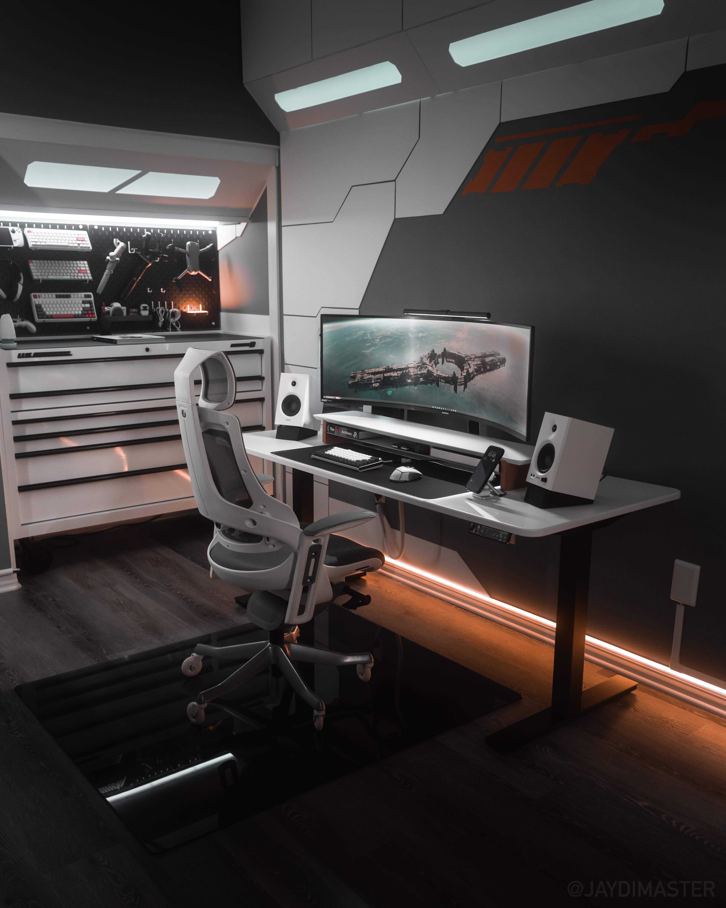

创作中心 AI驱动的专业小说创作流程
项目创建区
专业创作流程
等待启动
世界观设定
等待中故事大纲
等待中人物小传
等待中风格指南
等待中核心冲突
等待中资源管理
CPU使用率
45%
内存使用
2.8GB / 8GB
推荐线程
8 线程
AI模型状态
GPT-4
已连接Claude
已连接Gemini
未配置作品管理 管理您的小说创作项目
我的作品

星际流浪者
科幻小说
进度: 45,000 / 100,000 字
都市修仙传
玄幻小说
进度: 78,500 / 150,000 字
时间的秘密
悬疑小说
进度: 120,000 / 120,000 字
AI模型管理 配置和管理您的AI创作助手
API密钥配置
OpenAI GPT
已连接
Anthropic Claude
已连接
Google Gemini
未配置
模型性能监控
响应时间
1.2s
优化 15%
API调用
1,847
本月
成功率
99.8%
稳定
费用统计
¥128
本月
系统设置 个性化您的创作环境
通用设置
深色主题
使用科幻风格的深色界面主题
发光特效
启用界面元素的霓虹发光效果
动态背景
启用数据流动画和粒子效果
自动保存
每5分钟自动保存创作进度
安全设置
设备绑定状态
当前设备已安全绑定
设备ID: NF-7X8K-9M2L-Q4R6账户信息
创作者账户
用户ID: NF000123456
注册时间: 2024-01-15
专业版
有效期至: 2024-12-31